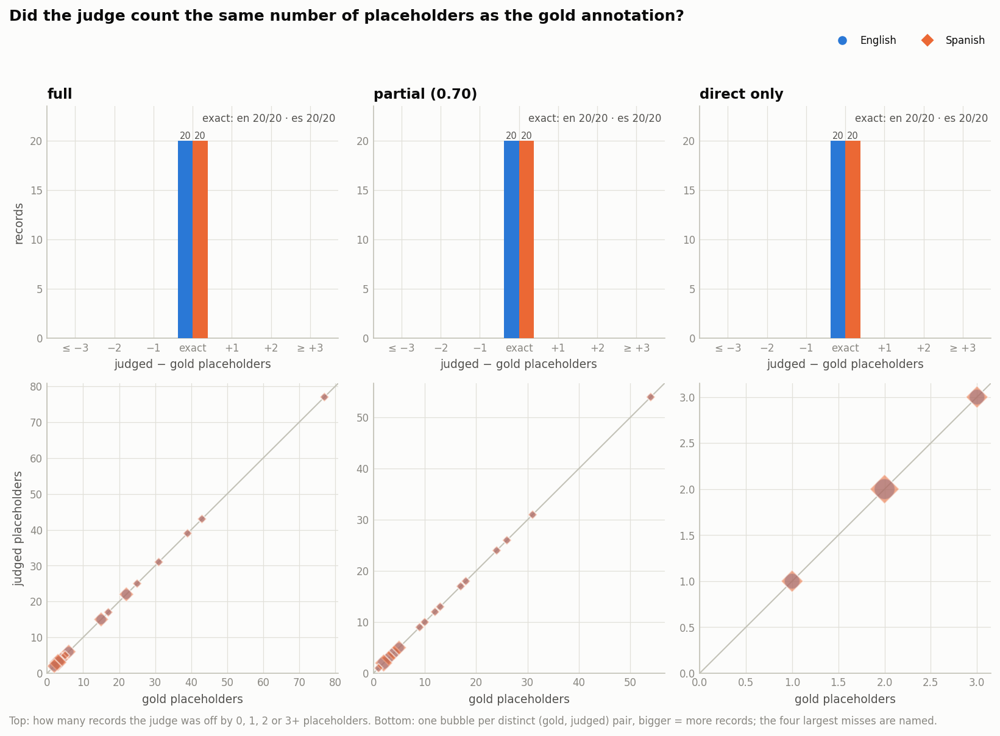
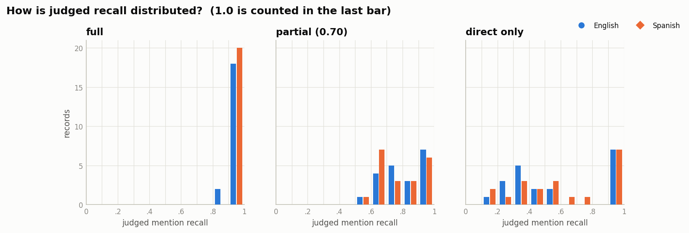
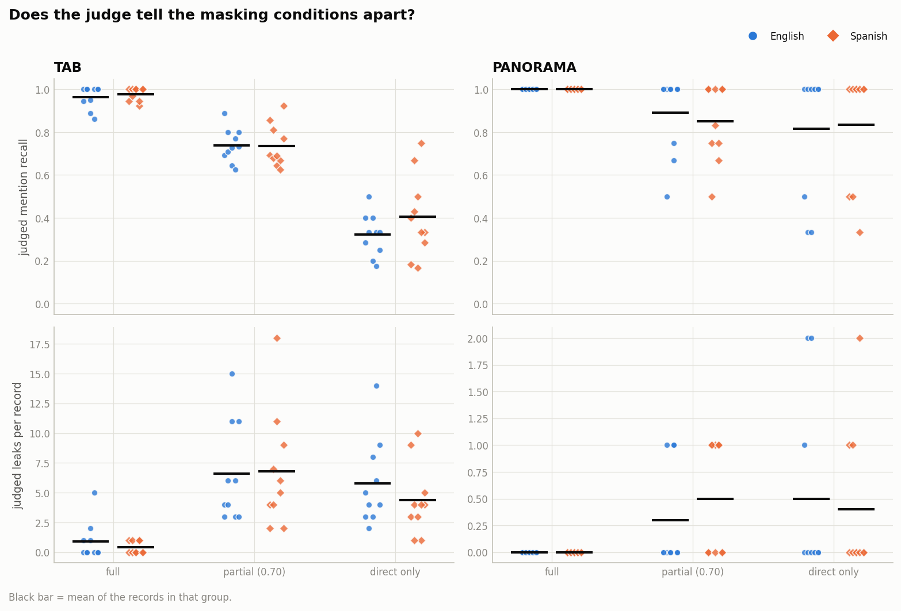
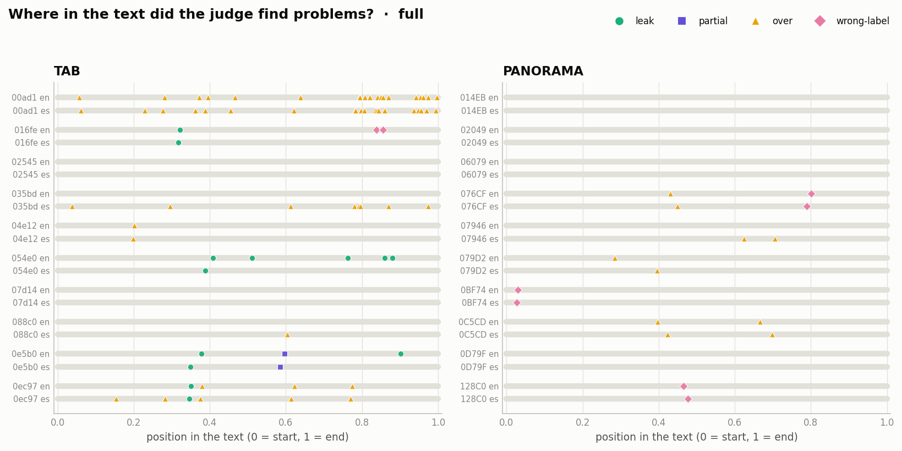
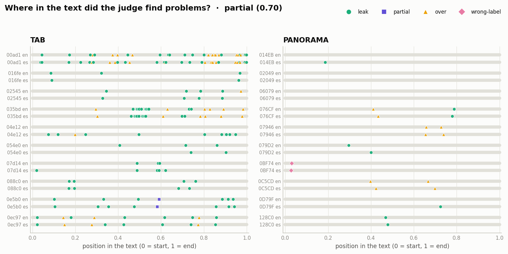
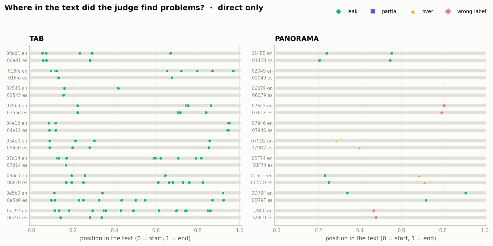
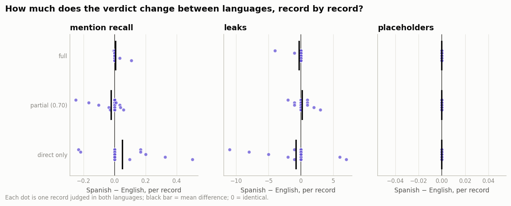
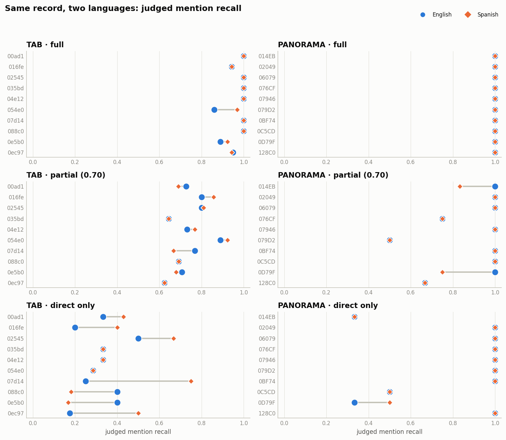
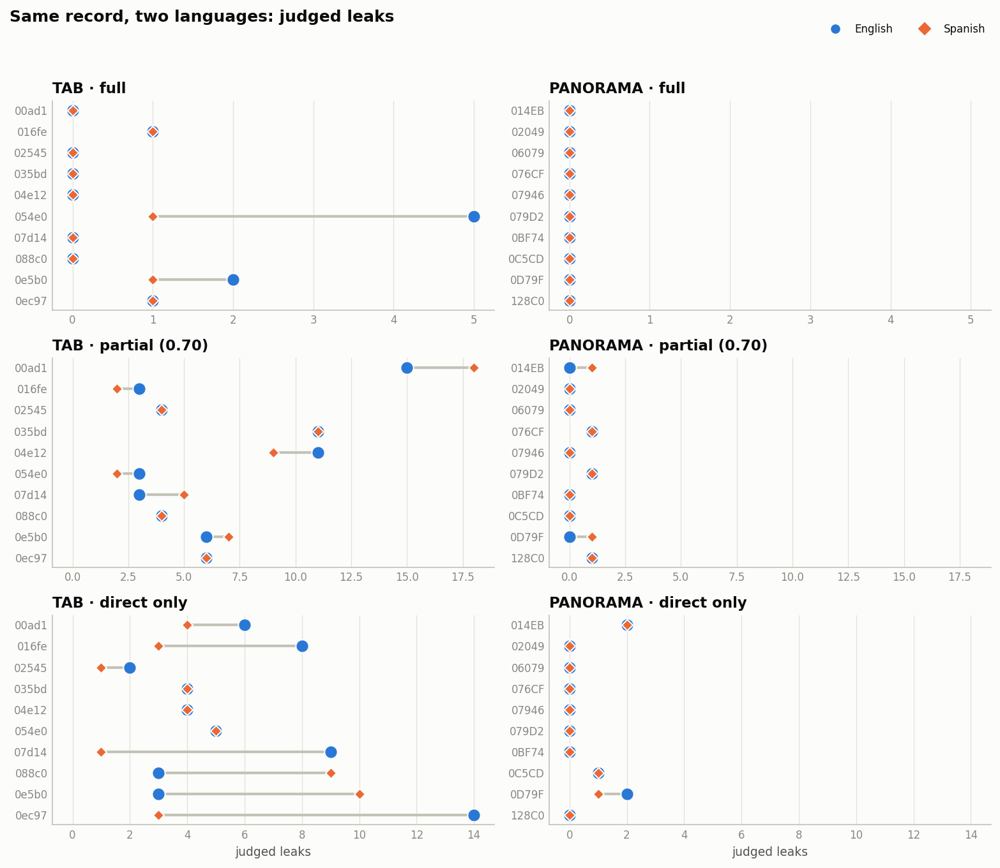
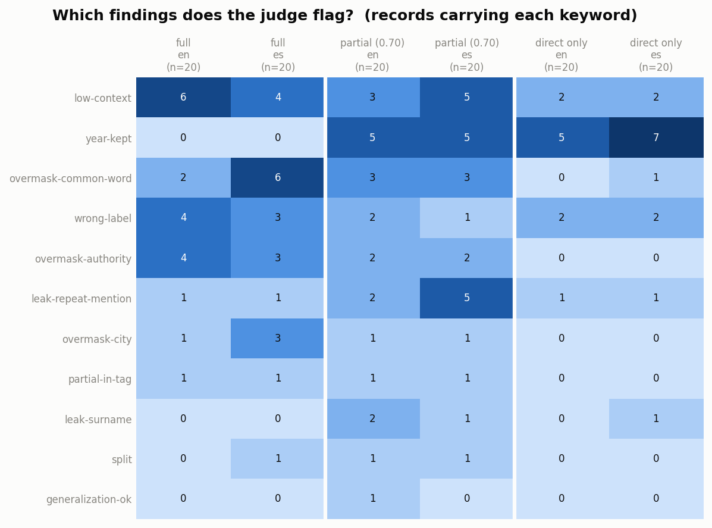

Judge analysis: English against Spanish
12 runs, 120 judgments (10 records per run). The English and Spanish files hold the same records, so every language comparison below is paired record by record. “Gold” is the dataset’s own annotation, which the judge never sees.
Small sample. Each run has only the first 10 records, so differences are suggestive, not conclusive. Layout pass: rerun on the full data to get numbers worth reporting.
1. Summary by condition and language
Averages per group, with the gold values beside them. gold leaks and gold recall are known only for full (0 leaks) and direct only (from its full twin); the partial condition has no gold leak count.
| condition | corpus | lang | n | placeholders | gold | count exact | leaks | gold leaks | recall | gold recall | mean |gap| | consistency | over |
|---|---|---|---|---|---|---|---|---|---|---|---|---|---|
| full | tab | en | 10 | 30.6 | 30.6 | 10 / 10 | 0.9 | 0 | 0.964 | 1.000 | 0.036 | 1.000 | 3.1 |
| full | tab | es | 10 | 30.6 | 30.6 | 10 / 10 | 0.4 | 0 | 0.978 | 1.000 | 0.022 | 0.999 | 3.5 |
| full | panorama | en | 10 | 3.8 | 3.8 | 10 / 10 | 0.0 | 0 | 1.000 | 1.000 | 0.000 | 1.000 | 0.4 |
| full | panorama | es | 10 | 3.8 | 3.8 | 10 / 10 | 0.0 | 0 | 1.000 | 1.000 | 0.000 | 1.000 | 0.6 |
| partial (0.70) | tab | en | 10 | 21.4 | 21.4 | 10 / 10 | 6.6 | – | 0.739 | – | – | 0.999 | 2.5 |
| partial (0.70) | tab | es | 10 | 21.4 | 21.4 | 10 / 10 | 6.8 | – | 0.736 | – | – | 0.999 | 2.4 |
| partial (0.70) | panorama | en | 10 | 3.1 | 3.1 | 10 / 10 | 0.3 | – | 0.892 | – | – | 1.000 | 0.5 |
| partial (0.70) | panorama | es | 10 | 3.1 | 3.1 | 10 / 10 | 0.5 | – | 0.850 | – | – | 1.000 | 0.5 |
| direct only | tab | en | 10 | 2.3 | 2.3 | 10 / 10 | 5.8 | 28.3 | 0.321 | 0.096 | 0.225 | 1.000 | 0.0 |
| direct only | tab | es | 10 | 2.3 | 2.3 | 10 / 10 | 4.4 | 28.3 | 0.405 | 0.096 | 0.309 | 1.000 | 0.0 |
| direct only | panorama | en | 10 | 1.7 | 1.7 | 10 / 10 | 0.5 | 2.1 | 0.817 | 0.518 | 0.298 | 1.000 | 0.2 |
| direct only | panorama | es | 10 | 1.7 | 1.7 | 10 / 10 | 0.4 | 2.1 | 0.833 | 0.518 | 0.315 | 1.000 | 0.2 |
2. Per record, one language at a time

Records where the placeholder count was off
The judge's placeholder count matched the gold count in all 120 judgments.


Where the problems are in the text
Built from error_offsets: each mark is one problem, placed by its relative position in the record. Offsets come from the judge counting characters, so positions are approximate.



3. Comparing the languages
| pairs | n | mean Δ recall (es−en) | es higher / equal / lower | mean Δ leaks | mean Δ placeholders | recall correlation | identical verdict counts |
|---|---|---|---|---|---|---|---|
| all | 60 | 0.012 | 12 / 40 / 8 | -0.27 | 0.00 | 0.92 | 0.60 |
| full | 20 | 0.007 | 2 / 17 / 1 | -0.25 | 0.00 | 0.82 | 0.65 |
| partial (0.70) | 20 | -0.022 | 4 / 11 / 5 | 0.20 | 0.00 | 0.89 | 0.55 |
| direct only | 20 | 0.050 | 6 / 12 / 2 | -0.75 | 0.00 | 0.87 | 0.60 |



Findings flagged by the judge

Records where the two languages differ most
Ranked by the change in leak count, then in placeholder count. The notes are the judge’s own and hold no original text.
TAB-0ec97 · tab · direct only
keywords: year-kept
Only the applicant and the two case numbers are masked. PERSON-b (the lawyer) is fully visible, 12 distinct dates tied to the applicant's case remain visible, and a health attribute (partial disability) is exposed. The birth year is kept as the policy allows. Output only, so estimated.
keywords: year-kept
Only the three code and party tags were masked, each consistently. The representative's name (PERSON-b), the accident date (DATE-a) and the disability (HEALTH-a) remain visible. The birth year and the city were kept as the policy allows. Procedural court dates were treated as keep. Output-only figures are estimated.
TAB-07d14 · tab · direct only
keywords: none
All 3 placeholders (2 CODE, 1 PERSON) are correct and consistent, but the tool left the Government Agent's full name (PERSON-b) visible. It also left the prison name (ORG-a) and seven dates tied to the applicant's applications and correspondence (DATE-a to DATE-g) visible. Estimated from the output only.
keywords: year-kept
Both case numbers and the applicant are masked consistently with fitting labels. PERSON-b (the government agent) is fully visible as a name. The birth year and the city of residence may stay under the default policy. Several dates tied to the applicant's correspondence were kept as public case dates. Output-only figures are estimated.
TAB-0e5b0 · tab · direct only
keywords: none
Only the application code and the applicant's name are masked, and both tags are correct. The lawyer PERSON-b is fully visible. HEALTH-a (eye condition) is exposed twice, in the 2001 medical report values and in the 2008 examination finding. Dates, birth year and Van were kept as allowed, and no consistency problems were found.
keywords: year-kept, low-context
Only the case code and the applicant's name tag were masked and both are consistent. PERSON-b (the lawyer) is visible. Seven personal dates (DATE-a to DATE-g) are visible. HEALTH-a (vision diagnosis) is visible in two passages. Court-act dates and the birth year were kept. Offsets are hand-counted estimates.
TAB-088c0 · tab · direct only
keywords: none
Only the applicant's name and the application number are masked. PERSON-b (the government agent) and ORG-a (the solicitors' firm) are visible, and DATE-a (the wife's death date) is visible. Claim and decision dates tied to the applicant were treated as keep along with the birth year, the region and procedural dates; a stricter reading would add leaks.
keywords: year-kept
Only the case number and the applicant were masked. PERSON-b (government agent) and ORG-a (law firm) are visible, as are seven DATE entities tied to the applicant's events (application, spouse's death, benefit decisions). Birth year, region and court decision date were kept as allowed.
TAB-016fe · tab · direct only
keywords: year-kept
Only the application number and the applicant's name are masked. Two lawyers (PERSON-b, PERSON-c) are fully visible, and six applicant-specific procedural dates (DATE-a to DATE-f) are visible. Birth year and city were kept as the policy allows. The conviction for aiding an illegal organisation and the left-wing magazine association remain visible, which adds to the inference risk. Output-only figures are estimated.
keywords: low-context
Only the case number and the applicant were masked. Two third-party names (PERSON-b and PERSON-c, the representing lawyers) stay visible, as does a personal detention date (DATE-a). Offsets are estimated. Kept as borderline: birth year, city of residence, the organization name and procedural dates.
TAB-054e0 · tab · full
keywords: leak-repeat-mention
HEALTH-a is masked once by a placeholder but the applicant's disability and poor health are stated in clear in five later mentions; no splits or merges seen; courts and the ministry kept as public authorities.
keywords: leak-repeat-mention
The disability of PERSON-a is masked once as a DEM tag but stays visible in later mentions (invalidity pension and similar wording). The LOC tag may hide a city the policy keeps, so it is low confidence. Other tags look correct and consistent.
4. Consistency problems (B³)
Only cells with p or r below 1 are listed: p below 1 is a merge (two entities share a tag), r below 1 is a split (one entity carries two tags). The full cell tables are in each run’s b3.csv.
| run | record | entity | identity | n | E | I | p | r | problem |
|---|---|---|---|---|---|---|---|---|---|
| full_tab_es | TAB-054e0 | DEM-b | DEM2 | 1 | 2 | 1 | 1.000 | 0.500 | split |
| full_tab_es | TAB-00ad1 | DATE-4 | DATETIME4 | 1 | 2 | 1 | 1.000 | 0.500 | split |
| full_tab_es | TAB-00ad1 | DATE-4 | DATETIME8 | 1 | 2 | 1 | 1.000 | 0.500 | split |
| partial070_tab_en | TAB-00ad1 | DATE-b | DATETIME2 | 1 | 2 | 1 | 1.000 | 0.500 | split |
| partial070_tab_en | TAB-00ad1 | DATE-b | DATETIME5 | 1 | 2 | 1 | 1.000 | 0.500 | split |
| partial070_tab_es | TAB-00ad1 | DATE-2 | DATETIME2 | 1 | 2 | 1 | 1.000 | 0.500 | split |
| partial070_tab_es | TAB-00ad1 | DATE-2 | DATETIME5 | 1 | 2 | 1 | 1.000 | 0.500 | split |
5. All records
full · tab
| record | ann. | placeholders en / es / gold | leaks en / es / gold | recall en / es / gold | consistency en / es | keywords en | keywords es |
|---|---|---|---|---|---|---|---|
| TAB-00ad1 | a4 | 77 / 77 / 77 | 0 / 0 / 0 | 1.000 / 1.000 / 1.000 | 1.000 / 0.991 | overmask-city, overmask-authority, overmask-common-word, low-context | split, overmask-city, overmask-authority, overmask-common-word |
| TAB-016fe | a5 | 17 / 17 / 17 | 1 / 1 / 0 | 0.944 / 0.944 / 1.000 | 1.000 / 1.000 | wrong-label | – |
| TAB-02545 | a1 | 22 / 22 / 22 | 0 / 0 / 0 | 1.000 / 1.000 / 1.000 | 1.000 / 1.000 | – | – |
| TAB-035bd | a1 | 39 / 39 / 39 | 0 / 0 / 0 | 1.000 / 1.000 / 1.000 | 1.000 / 1.000 | overmask-authority, overmask-common-word, low-context | overmask-authority, overmask-common-word |
| TAB-04e12 | a3 | 43 / 43 / 43 | 0 / 0 / 0 | 1.000 / 1.000 / 1.000 | 1.000 / 1.000 | overmask-authority | overmask-common-word |
| TAB-054e0 | a4 | 31 / 31 / 31 | 5 / 1 / 0 | 0.861 / 0.969 / 1.000 | 1.000 / 1.000 | leak-repeat-mention | leak-repeat-mention |
| TAB-07d14 | a5 | 15 / 15 / 15 | 0 / 0 / 0 | 1.000 / 1.000 / 1.000 | 1.000 / 1.000 | – | – |
| TAB-088c0 | a4 | 15 / 15 / 15 | 0 / 0 / 0 | 1.000 / 1.000 / 1.000 | 1.000 / 1.000 | – | overmask-city |
| TAB-0e5b0 | a3 | 25 / 25 / 25 | 2 / 1 / 0 | 0.889 / 0.923 / 1.000 | 1.000 / 1.000 | partial-in-tag | partial-in-tag |
| TAB-0ec97 | a3 | 22 / 22 / 22 | 1 / 1 / 0 | 0.950 / 0.944 / 1.000 | 1.000 / 1.000 | overmask-authority | overmask-city, overmask-authority |
full · panorama
| record | ann. | placeholders en / es / gold | leaks en / es / gold | recall en / es / gold | consistency en / es | keywords en | keywords es |
|---|---|---|---|---|---|---|---|
| PANORAMA-014EB | a3 | 6 / 6 / 6 | 0 / 0 / 0 | 1.000 / 1.000 / 1.000 | 1.000 / 1.000 | low-context | – |
| PANORAMA-02049 | a2 | 2 / 2 / 2 | 0 / 0 / 0 | 1.000 / 1.000 / 1.000 | 1.000 / 1.000 | – | – |
| PANORAMA-06079 | a4 | 3 / 3 / 3 | 0 / 0 / 0 | 1.000 / 1.000 / 1.000 | 1.000 / 1.000 | – | – |
| PANORAMA-076CF | a5 | 5 / 5 / 5 | 0 / 0 / 0 | 1.000 / 1.000 / 1.000 | 1.000 / 1.000 | wrong-label | wrong-label, overmask-common-word, low-context |
| PANORAMA-07946 | a3 | 6 / 6 / 6 | 0 / 0 / 0 | 1.000 / 1.000 / 1.000 | 1.000 / 1.000 | low-context | overmask-common-word, low-context |
| PANORAMA-079D2 | a3 | 2 / 2 / 2 | 0 / 0 / 0 | 1.000 / 1.000 / 1.000 | 1.000 / 1.000 | low-context | overmask-common-word |
| PANORAMA-0BF74 | a1 | 3 / 3 / 3 | 0 / 0 / 0 | 1.000 / 1.000 / 1.000 | 1.000 / 1.000 | wrong-label | wrong-label, low-context |
| PANORAMA-0C5CD | a1 | 4 / 4 / 4 | 0 / 0 / 0 | 1.000 / 1.000 / 1.000 | 1.000 / 1.000 | – | – |
| PANORAMA-0D79F | a2 | 4 / 4 / 4 | 0 / 0 / 0 | 1.000 / 1.000 / 1.000 | 1.000 / 1.000 | low-context | low-context |
| PANORAMA-128C0 | a5 | 3 / 3 / 3 | 0 / 0 / 0 | 1.000 / 1.000 / 1.000 | 1.000 / 1.000 | wrong-label | wrong-label |
partial (0.70) · tab
| record | ann. | placeholders en / es / gold | leaks en / es / gold | recall en / es / gold | consistency en / es | keywords en | keywords es |
|---|---|---|---|---|---|---|---|
| TAB-00ad1 | a4 | 54 / 54 / 54 | 15 / 18 / – | 0.727 / 0.690 / – | 0.987 / 0.987 | split, overmask-authority, overmask-common-word | leak-repeat-mention, split, overmask-authority, overmask-common-word, low-context |
| TAB-016fe | a5 | 12 / 12 / 12 | 3 / 2 / – | 0.800 / 0.857 / – | 1.000 / 1.000 | year-kept | year-kept |
| TAB-02545 | a1 | 17 / 17 / 17 | 4 / 4 / – | 0.800 / 0.810 / – | 1.000 / 1.000 | leak-repeat-mention, year-kept, generalization-ok | leak-repeat-mention, year-kept |
| TAB-035bd | a1 | 26 / 26 / 26 | 11 / 11 / – | 0.645 / 0.645 / – | 1.000 / 1.000 | overmask-common-word | overmask-common-word |
| TAB-04e12 | a3 | 31 / 31 / 31 | 11 / 9 / – | 0.732 / 0.769 / – | 1.000 / 1.000 | leak-surname, leak-repeat-mention, wrong-label | leak-surname, leak-repeat-mention |
| TAB-054e0 | a4 | 24 / 24 / 24 | 3 / 2 / – | 0.889 / 0.923 / – | 1.000 / 1.000 | year-kept | year-kept, leak-repeat-mention, low-context |
| TAB-07d14 | a5 | 10 / 10 / 10 | 3 / 5 / – | 0.769 / 0.667 / – | 1.000 / 1.000 | – | low-context |
| TAB-088c0 | a4 | 9 / 9 / 9 | 4 / 4 / – | 0.692 / 0.692 / – | 1.000 / 1.000 | year-kept | year-kept |
| TAB-0e5b0 | a3 | 18 / 18 / 18 | 6 / 7 / – | 0.708 / 0.680 / – | 1.000 / 1.000 | partial-in-tag | leak-repeat-mention, partial-in-tag, year-kept |
| TAB-0ec97 | a3 | 13 / 13 / 13 | 6 / 6 / – | 0.625 / 0.625 / – | 1.000 / 1.000 | overmask-city, overmask-authority, year-kept | overmask-city, overmask-authority |
partial (0.70) · panorama
| record | ann. | placeholders en / es / gold | leaks en / es / gold | recall en / es / gold | consistency en / es | keywords en | keywords es |
|---|---|---|---|---|---|---|---|
| PANORAMA-014EB | a3 | 5 / 5 / 5 | 0 / 1 / – | 1.000 / 0.833 / – | 1.000 / 1.000 | – | – |
| PANORAMA-02049 | a2 | 2 / 2 / 2 | 0 / 0 / – | 1.000 / 1.000 / – | 1.000 / 1.000 | – | low-context |
| PANORAMA-06079 | a4 | 3 / 3 / 3 | 0 / 0 / – | 1.000 / 1.000 / – | 1.000 / 1.000 | – | – |
| PANORAMA-076CF | a5 | 4 / 4 / 4 | 1 / 1 / – | 0.750 / 0.750 / – | 1.000 / 1.000 | low-context | – |
| PANORAMA-07946 | a3 | 5 / 5 / 5 | 0 / 0 / – | 1.000 / 1.000 / – | 1.000 / 1.000 | overmask-common-word, low-context | overmask-common-word, low-context |
| PANORAMA-079D2 | a3 | 1 / 1 / 1 | 1 / 1 / – | 0.500 / 0.500 / – | 1.000 / 1.000 | – | – |
| PANORAMA-0BF74 | a1 | 2 / 2 / 2 | 0 / 0 / – | 1.000 / 1.000 / – | 1.000 / 1.000 | wrong-label, low-context | wrong-label |
| PANORAMA-0C5CD | a1 | 4 / 4 / 4 | 0 / 0 / – | 1.000 / 1.000 / – | 1.000 / 1.000 | – | – |
| PANORAMA-0D79F | a2 | 3 / 3 / 3 | 0 / 1 / – | 1.000 / 0.750 / – | 1.000 / 1.000 | – | – |
| PANORAMA-128C0 | a5 | 2 / 2 / 2 | 1 / 1 / – | 0.667 / 0.667 / – | 1.000 / 1.000 | leak-surname | – |
direct only · tab
| record | ann. | placeholders en / es / gold | leaks en / es / gold | recall en / es / gold | consistency en / es | keywords en | keywords es |
|---|---|---|---|---|---|---|---|
| TAB-00ad1 | a4 | 3 / 3 / 3 | 6 / 4 / 74 | 0.333 / 0.429 / 0.039 | 1.000 / 1.000 | – | – |
| TAB-016fe | a5 | 2 / 2 / 2 | 8 / 3 / 15 | 0.200 / 0.400 / 0.118 | 1.000 / 1.000 | year-kept | low-context |
| TAB-02545 | a1 | 2 / 2 / 2 | 2 / 1 / 20 | 0.500 / 0.667 / 0.091 | 1.000 / 1.000 | year-kept | year-kept |
| TAB-035bd | a1 | 2 / 2 / 2 | 4 / 4 / 37 | 0.333 / 0.333 / 0.051 | 1.000 / 1.000 | year-kept | year-kept |
| TAB-04e12 | a3 | 2 / 2 / 2 | 4 / 4 / 41 | 0.333 / 0.333 / 0.047 | 1.000 / 1.000 | leak-repeat-mention | leak-surname, leak-repeat-mention |
| TAB-054e0 | a4 | 2 / 2 / 2 | 5 / 5 / 29 | 0.286 / 0.286 / 0.065 | 1.000 / 1.000 | year-kept | year-kept |
| TAB-07d14 | a5 | 3 / 3 / 3 | 9 / 1 / 12 | 0.250 / 0.750 / 0.200 | 1.000 / 1.000 | – | year-kept |
| TAB-088c0 | a4 | 2 / 2 / 2 | 3 / 9 / 13 | 0.400 / 0.182 / 0.133 | 1.000 / 1.000 | – | year-kept |
| TAB-0e5b0 | a3 | 2 / 2 / 2 | 3 / 10 / 23 | 0.400 / 0.167 / 0.080 | 1.000 / 1.000 | – | year-kept, low-context |
| TAB-0ec97 | a3 | 3 / 3 / 3 | 14 / 3 / 19 | 0.176 / 0.500 / 0.136 | 1.000 / 1.000 | year-kept | year-kept |
direct only · panorama
| record | ann. | placeholders en / es / gold | leaks en / es / gold | recall en / es / gold | consistency en / es | keywords en | keywords es |
|---|---|---|---|---|---|---|---|
| PANORAMA-014EB | a3 | 1 / 1 / 1 | 2 / 2 / 5 | 0.333 / 0.333 / 0.167 | 1.000 / 1.000 | low-context | – |
| PANORAMA-02049 | a2 | 1 / 1 / 1 | 0 / 0 / 1 | 1.000 / 1.000 / 0.500 | 1.000 / 1.000 | – | – |
| PANORAMA-06079 | a4 | 2 / 2 / 2 | 0 / 0 / 1 | 1.000 / 1.000 / 0.667 | 1.000 / 1.000 | – | – |
| PANORAMA-076CF | a5 | 3 / 3 / 3 | 0 / 0 / 2 | 1.000 / 1.000 / 0.600 | 1.000 / 1.000 | wrong-label | wrong-label |
| PANORAMA-07946 | a3 | 1 / 1 / 1 | 0 / 0 / 5 | 1.000 / 1.000 / 0.167 | 1.000 / 1.000 | – | – |
| PANORAMA-079D2 | a3 | 2 / 2 / 2 | 0 / 0 / 0 | 1.000 / 1.000 / 1.000 | 1.000 / 1.000 | low-context | overmask-common-word |
| PANORAMA-0BF74 | a1 | 1 / 1 / 1 | 0 / 0 / 2 | 1.000 / 1.000 / 0.333 | 1.000 / 1.000 | – | – |
| PANORAMA-0C5CD | a1 | 2 / 2 / 2 | 1 / 1 / 2 | 0.500 / 0.500 / 0.500 | 1.000 / 1.000 | – | – |
| PANORAMA-0D79F | a2 | 1 / 1 / 1 | 2 / 1 / 3 | 0.333 / 0.500 / 0.250 | 1.000 / 1.000 | – | – |
| PANORAMA-128C0 | a5 | 3 / 3 / 3 | 0 / 0 / 0 | 1.000 / 1.000 / 1.000 | 1.000 / 1.000 | wrong-label | wrong-label |